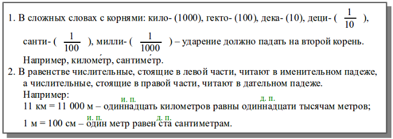
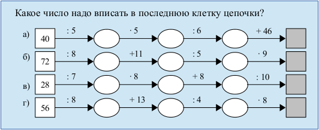

Карточки с заданиями к практическим занятиям по офисным программам.
LibreOffice Writer. Вставка дробей, расстановка ударений
Необходимые предварительные знания: списки, копирование объектов, форматирование текста.
Как создать такой параграф в текстовом процессоре? (пример взят из учебника «Математика, 5 класс» (Н. Я. Виленкин и др.))

Дроби
Меню: Вставка → Объект → Формула... В низу рабочей области открывается текстовое поле для ввода формул. Чтобы получить дробь, достаточно написать, например, 1 over 10 или нажать на кнопку «Деление (дробь)» на панели «Элементы», которая появляется в режиме ввода формулы.
Знаки ударения
Следует установить курсор после буквы, на которую должно падать ударение. Меню: Вставка → Специальные символы... В появившемся окне в списке «Подмножество» выбрать «Дополнительные диакритические знаки». Символы ударения U+0300 или U+0301. (К сожалению диакритические знаки в «специальных символах» бывают не всегда.)
Надписи над словами
На панели инструментов «Стандартная» включить кнопку «Функции рисования». На появившейся панели «Рисование» выбрать инструмент «Текст» («Текстовые»). Растянуть рамку, вписать в нее, например, «и. п.», выделить текст и уменьшить кегль (например, до 10 pt). Нажать Esc. Отредактировать размер поля и поместить его над словом.
Далее проще несколько раз скопировать созданную рамку с текстом, расставить над другими словами и отредактировать в них текст (двойной клик по рамке). При этом надо помнить, что после копирования надо снимать выделение; иначе вставка будет происходить вместо выделенного объекта.
Элемент списка без номера/маркера
После нажатия Enter автоматически создается новый элемент списка с номером/маркером. Чтобы отменить номер/маркер, достаточно нажать клавишу Backspace. Если после такого «ненумерованного абзаца» нажать Enter, то нумерация/маркировка будет продолжена.
LibreOffice Writer. Создание схемы с помощью инструментов рисования
Пусть в документе, создаваемом во Writer, необходимо нарисовать такую схему (пример взят из «Математика, 5 класс» (Н.Я. Виленкин и др.)):

Создание схемы с помощью инструментов рисования
- С помощью инструмента «Прямоугольник» панели «Рисование» нарисовать квадрат (зажав клавишу Shift). На панели «Свойства рисунка» (обычно появляется в верхней части окна) установить цвет заливки и контура, толщину контура (0,03см). Вписать в квадрат число (двойной клик для активации режима ввода).
- Нарисовать линию, выровнять ее по центру правой стороны квадрата (для более точного позиционирования следует зажать клавишу Alt). Установить цвет, толщину и стрелку справа.
- Нарисовать эллипс, поменять для него цвет контура и заливки, выровнять у правого конца стрелки.
- Выделить стрелку и эллипс (Shift), скопировать и вставить три раза (не забываем снимать выделение перед вставкой), выровнять цепочку (лучше перемещать объекты с помощью стрелки на клавиатуре, а не мышью). У последней копии удалить эллипс, оставив одну стрелку.
- Скопировать квадрат, переместить его в конец цепочки, поменять заливку, удалить цифры.
- С помощью инструмента «Текст» («Текстовые») панели инструментов «Рисование» создать небольшую текстовую область и вписать туда «: 5». Скорректировать размер рамки и поместить ее над первой стрелкой.
- Продублировать несколько раз текстовую область и расставить копии над другими стрелками. Поменять текст (знак умножения в виде точки можно найти в «Специальных символах»).
- С помощью инструмента «Выделить» панели «Рисование» выделить все созданные элементы, сгруппировать их. Для этого необходимо в контекстном меню выбрать Группировка → Сгруппировать.
- Продублировать цепочку необходимое количество раз, копии переместить ниже.
- Изменить текст в текстовых областях и квадратах.
Создание списка изображений и смена маркера нумерации
- Привязку каждой цепочки сделать «Как символ» (в контекстном меню Привязка → Как символ).
- Расположить каждую цепочку на новой строке. Выделить все строки и нажать F12.
- Курсор установить внутри списка. Отрыть окно «Маркеры и нумерация» на вкладке «Настройки» выбрать нумерацию с русскими строчными буквами, установить знак «после» в виде скобки.